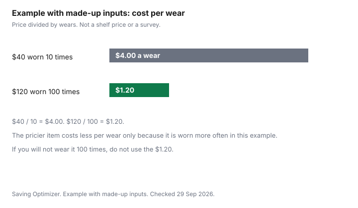

Clothing · Canada
A Wardrobe That Costs Less Per Wear: Building a Four-Season Canadian Capsule
A closet can be full and still send you shopping, because the full closet is not a set of clothes you wear through a Canadian year. Cost per wear is the correction. It is also the promise on the Clothing hub: fabrics, repairs, and sales that are actually sales. This page builds a four-season list, then a buying year. It does not name a correct number of garments, and it does not rank brands. The dollars in the example are made up so the division is visible.
Key takeaways
- Cost per wear is price plus repairs, divided by wears. Example with made-up inputs: $40 worn 10 times is $4.00. $120 worn 100 times is $1.20.
- A Canadian capsule is layers: base, mid, shell, winter coat, plus footwear and the work pieces your week needs.
- Audit what you wore before you buy. A sale on a duplicate is not a saving.
- Spend on the coat, the walking boots, and weekly work clothes. Save where used or a simple replacement is easy.
- Longevity is fabric and construction you can see, plus a repair you will actually book. The 12-month plan follows the seasons, not a percent off.
Cost per wear explained with a worked example
Write the price you will pay. Add a repair only if you will pay it.
Divide by the number of days you will actually wear it before you discard it or it no longer fits. That is cost per wear. A garment you wear twice has a terrible number no matter how small the ticket was. A garment you wear all winter has a small number even when the ticket stung.
Example with made-up inputs. A $40 item worn 10 times is $4.00 a wear. A $120 item worn 100 times is $1.20 a wear. The chart is those two bars. They are not store prices. If the $120 item is worn 10 times, it is $12.00 a wear and the cheap one wins. Use your wears, not the flattering column. The same division, for a coat across five winters, is on the coat guide. Put the irregular replacements in a sinking fund so the coat is not a panic purchase. The month itself belongs in a zero-based budget.
| Row | Price | Wears | Cost per wear |
|---|---|---|---|
| Worn rarely | $40 | 10 | $4.00 |
| Worn often | $120 | 100 | $1.20 |
| Your piece |

Canadian climate layers: base, mid, shell, winter coat
A Canadian year is not a single climate. You need a base layer that can be washed constantly, a mid layer for the cool months, a shell for wind and rain, and a winter coat for the cold.
Footwear is its own row: a walking shoe, and a winter boot if you walk on ice. Work pieces are whatever your week requires, and they are not optional if the dress code is real. Kids' snow gear is a separate kit, on the kids' winter guide, because it is outgrown on a different clock.
The table is roles, not a shopping list of brands. If you already own a sound shell, you do not buy another because a sale said "layering." If you do not own a winter coat you will wear, the capsule is unfinished no matter how many T-shirts you own.
| Piece | Role | Fabric or construction to look for | Spend or save |
|---|---|---|---|
| Base layers | Next to skin, washed often | A fibre you will actually launder on the care label | Save. Replace when thin. Used is fine if the elastic and the seams hold. |
| Mid layers | The cool-month piece under a shell | A knit or fleece that is not already pilled through | Save, unless you wear it most days. Then one good one beats three you ignore. |
| Shell | Wind and rain | A stated membrane or a coating, plus taped or at least intact seams | Spend if you are outside in weather. A shell you do not wear is not this row. |
| Winter coat | The cold months | Insulation and a wind layer matched to your week, on the coat guide | Spend. This is the cost-per-wear piece with the longest planned life. |
| Footwear | Daily shoes, and boots if you walk on ice | A sole you trust, and a fit with the socks you wear | Spend on the boots you walk in. Save on shoes that are not that job. |
| Work pieces | What the week requires | Seams and fabric that survive weekly wear and washing | Spend on the pieces you wear every week. Do not collect occasion outfits. |
Audit what you own before you buy
Empty the "I might wear this" theory. For one month, notice what you actually put on.
Then lay out next season: the coat, the boots, the work week, the rain. The holes are the shopping list. A second navy sweater is not a hole. A coat with a dead zipper might be a repair, and a repair quote comes before a replacement. The used-goods guide is fair game for the save rows. It is a worse idea for a boot sole you need to trust on ice, unless you can inspect that sole.
Write three lines: repair, replace, do not buy. Sales that are actually sales are the ones that hit the replace line. Everything else is how closets fill up while you still have nothing to wear.
Where to spend and where to save
Spend where failure is cold, wet, or a work problem: the winter coat, the walking boots, the weekly work clothes, and a shell if you stand in weather. Save on base layers, on occasion clothes, and on anything the audit says you already own. A discounted gift card is an offer type you can use on a replace-line purchase. It does not move a want onto the replace line.
The coat worksheet and the boot cost-per-winter chart are the spend math, with made-up inputs labelled on those pages. Do not import those example prices into this table. They were never shelf prices.
Fabric and construction signs of longevity
Look at what you can see. Seams that are even.
Fabric that is not already thin at the elbow. A fibre label you understand well enough to launder. Buttons that are sewn on, and a zip that runs. A lining that is not torn. Those are the same checks as the off-price page, and they apply at full price too.
Care is part of longevity. Follow the label. The cold-water guide is about the washer's energy, and it is not permission to ignore a care label that says otherwise. A repair you book, a new zip or a patch, extends wears. A repair you will not book does not belong in the cost-per-wear denominator.
A 12-month buying plan tied to sale seasons
Buy when the replace line meets the season, not when a percent sign appears. January and July are the wide clearance windows on the calendar. Outerwear is a fall-selection versus late-winter-leftover choice, spelled out on the Black Friday and Boxing Day guide for 2026. This page does not add a discount percent to any month.
A simple year: audit in September before you need the coat. Buy the coat when the size is there if you do not own one. Use January for leftovers and for next year's basics if the size is still sensible. Use July for summer leftovers you will wear, not for a pile. Repair in the shoulder months. If a month has no hole, the correct purchase is none.
Sources
- The $40, $120, 10 wears and 100 wears are an example with made-up inputs.
- Season timing is the companion calendar and the 2026 Black Friday and Boxing Day dates on the sale guide. No discount percent is added.
- Checked 29 Sep 2026.
Frequently asked questions
What is cost per wear?
It is the price you pay, plus repairs you pay, divided by the number of times you wear the garment. Example with made-up inputs: $40 worn 10 times is $4.00 a wear, and $120 worn 100 times is $1.20 a wear. The second figure is lower only because of the wears. If you will not wear it, the higher price is not a saving.
How many clothes does a Canadian capsule wardrobe need?
Enough layers for the year you have: a base, a mid layer, a shell, a winter coat, footwear, and the work pieces your week requires. There is no correct count on this page, because a household that walks to work and a household that drives do not share a number. Count what you wore in the last month before you add a piece.
Where should I spend more and where should I save?
Spend where a failure is expensive: the winter coat, the boots you walk in, and the work pieces you wear every week. Save on pieces that are easy to replace, easy to find used, or worn rarely. A sale is a saving only when you needed the piece. The coat guide and the boot guide are the spend rows.
How do I audit my closet before buying?
Take out what you wore in the last month and what you will wear in the next season. Note the holes: a missing shell, a coat that is finished, a work shirt that is the only one. Repairs go on a list with a quote before a replacement does. Anything that failed the audit does not get a duplicate in a sale.
Does a capsule wardrobe work with Canadian winters?
It works if the winter coat and the boots are in the capsule, not treated as extras you forget until November. A four-season list that stops at a light jacket is a three-season list. The month-by-month calendar is when you replace those pieces. The winter itself is not optional.
Researched and drafted with AI assistance and fact-checked against official Canadian sources. How we create content.
Disclosure: Discounted retailer gift cards are an offer type. Saving Optimizer may earn a commission if a partner link is added later. No partnership is claimed. A card discount does not change cost per wear unless you actually wear the garment. Education only.